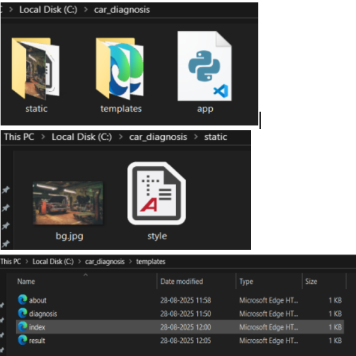
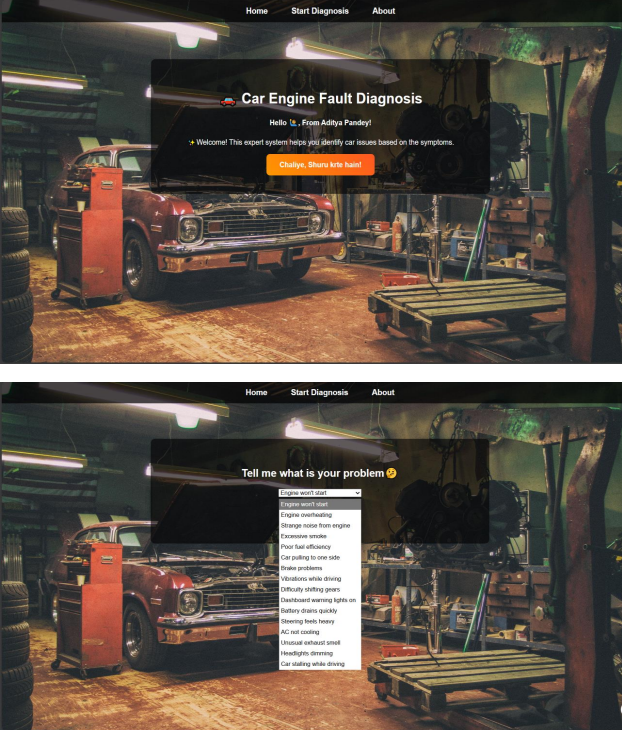
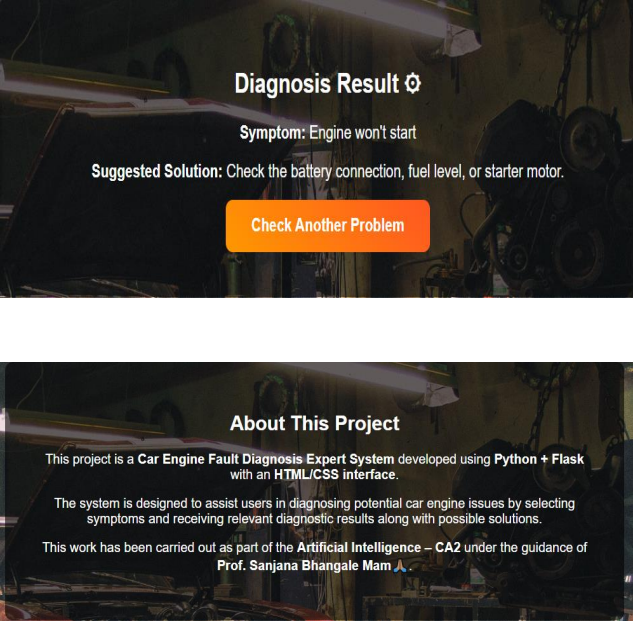

The Car Engine Fault Diagnosis Expert System is a knowledge-based system developed as part of the Continuous Assessment-2 of Artificial Intelligence. The system helps users identify common car engine faults by selecting symptoms and provides suggested solutions based on expert knowledge.
This project demonstrates the application of Artificial Intelligence through Expert Systems integrated with web technologies. The backend logic is implemented using Python with the Flask framework, while the frontend interface is designed using HTML and CSS to provide a simple and user-friendly experience.
Technologies Used: Python, Flask, HTML, CSS


